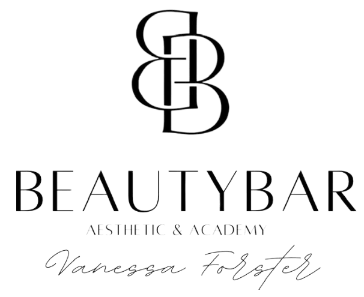

Über mich
Vanessa Forster
Hey Beauty, ich bin Vanessa
Ich freue mich dich hier begrüßen zu dürfen, hier die wichtigsten Infos über mich:
- Seit 2021 erfolgreich in der Beautybranche tätig
- Aus- und Weiterbildungen in Deutschland & international
- Über 30x zertifiziert
- 2024 eigenes Kosmetikstudio mit 130 qm in Gersthofen eröffnet
- Seit 2025 offizielle Trainerin und Trainingsinstitut für die Kosmetikfirma CureConcept
P.S: Falls dich meine Story interessiert, einfach weiterscrollen ↓
Vanessa's Story:
Ich habe schon immer davon geträumt, mein eigenes Beautybusiness zu haben…
Allerdings war es schwieriger als ich dachte…
Mein Weg in die Beautybranche begann nicht so, wie viele vielleicht denken würden.
Nachdem ich mein Studium im dritten Semester abgebrochen hatte, begann ich eine Ausbildung zur Verwaltungsfachangestellten und arbeitete anschließend bei der Ausländerbehörde in Augsburg. Ein sicherer Job mit geregelten Arbeitszeiten, festem Gehalt und guten Aufstiegsmöglichkeiten – eigentlich alles, was man sich wünschen sollte.
Und trotzdem spürte ich jeden Tag: Das erfüllt mich nicht.
Ich stellte mir immer wieder dieselbe Frage:
Soll das wirklich mein Leben sein?
Während meiner Ausbildung begann ich deshalb, nebenbei Wimpernbehandlungen für Freundinnen zu machen. Was zunächst nur eine kleine Idee war, entwickelte sich schnell zu einer echten Leidenschaft. Besonders während der Corona-Zeit hatte ich viel Zeit, über meine Zukunft nachzudenken.
Ich begann zu träumen.
Ich stellte mir vor, wie mein eigenes Studio aussehen könnte. Welche Atmosphäre ich schaffen möchte. Welche Behandlungen ich anbieten würde. Doch gleichzeitig fühlte sich dieser Traum unglaublich weit entfernt an – fast unrealistisch.
Also schob ich ihn immer wieder beiseite.
Trotzdem ließ mich die Beautybranche nicht mehr los. Immer mehr Kundinnen kamen zu mir, und mein kleiner Nebenjob begann langsam zu wachsen. Mein Alltag bestand plötzlich aus zwei Jobs gleichzeitig:
Morgens von 7 bis 17 Uhr in der Ausländerbehörde, danach bis 22 Uhr Beauty Artist bei mir zuhause.
Ich arbeitete nahezu rund um die Uhr.
Doch trotz der kleinen Erfolge begleiteten mich immer wieder Selbstzweifel. Die Atmosphäre im Büro raubte mir zunehmend Energie und mein Selbstbewusstsein begann zu schwinden. Ich stand kurz vor einem Burnout und zog mich für eine Zeit zurück, um wieder zu mir selbst zu finden.
In dieser Zeit wurde mir eines klar:
Meine Leidenschaft gehört der Beautybranche.
Natürlich war die Angst da.
Was, wenn es nicht funktioniert?
Was, wenn ich nicht gut genug bin?
Was, wenn ich finanziell scheitere?
Was werden andere denken?
Doch irgendwann wurde mir bewusst:
Die Angst vor dem Scheitern darf nicht größer sein als der Wunsch, ein erfülltes Leben zu führen.
Also traf ich die größte Entscheidung meines Lebens.
Ich kündigte meinen sicheren Job und wagte den Schritt in die Selbstständigkeit.
Aus einer Idee wurde Realität:
Das Kosmetikstudio Vanessa Forster im Herzen von Gersthofen entstand.
Heute darf ich jeden Tag genau das tun, was mich erfüllt: Menschen mit professionellen Behandlungen zu mehr Ausstrahlung und Selbstbewusstsein zu verhelfen und mein Wissen in meiner Academy an angehende Beauty Artists weiterzugeben.
Und die Reise hat gerade erst begonnen.
Meine Mission ist es, natürliche Schönheit zu unterstreichen, Haut nachhaltig zu verbessern und Frauen dabei zu helfen, sich in ihrer eigenen Haut wieder wohlzufühlen.
Meinen ersten Behandlungsraum richtete ich zuhause in der gemeinsamen Wohnung mit meinem Freund ein. Die Arbeitszeiten waren anfangs flexibel und oft auch lang, da ich nebenbei viel Zeit in meine Weiterentwicklung und den Aufbau meines Kundenstamms investierte.
Die Einnahmen waren zu Beginn noch überschaubar, doch ich wusste, dass der Aufbau eines eigenen Unternehmens Zeit, Geduld und konsequente Arbeit erfordert. Natürlich gab es immer wieder Momente, in denen ich mich gefragt habe, ob ich auf dem richtigen Weg bin.
Gerade deshalb habe ich bewusst in meine Weiterbildung investiert. Ich besuchte zahlreiche Schulungen, nahm an Masterminds teil, arbeitete mit Mentoren aus verschiedenen Bereichen zusammen und baute mir Schritt für Schritt ein wertvolles Netzwerk innerhalb der Branche auf.
Besonders das Feedback meiner Kundinnen motivierte mich, meine Arbeit stetig zu verbessern und meine Fähigkeiten weiter auszubauen. Jede Erfahrung – auch Herausforderungen – hat dazu beigetragen, mich fachlich und persönlich weiterzuentwickeln.
Als sich schließlich die Möglichkeit ergab, ein eigenes Studio zu mieten, war für mich klar, dass ich diesen nächsten Schritt gehen möchte.
Während der Besichtigung stand ich hinter der Theke, sah mich um und wusste: Hier soll mein Studio entstehen.
So entstand schließlich mein eigenes Studio – ein wichtiger Meilenstein auf meinem Weg in der Beautybranche.
Der Einstieg in die Beautybranche bringt viele Möglichkeiten, aber auch Herausforderungen mit sich. Besonders das Erlernen und Perfektionieren von Behandlungstechniken erfordert Zeit, Präzision und fundiertes Wissen.
Genau deshalb sind Qualität, sauberes Arbeiten und echtes Fachwissen für mich die Grundlage jeder erfolgreichen Behandlung.
Auf meinem eigenen Weg habe ich viele Erfahrungen gesammelt – auch durch Fehler. Gerade diese Erfahrungen haben mir geholfen, meine Techniken zu verbessern und ein tiefes Verständnis für meine Arbeit zu entwickeln.
Mit meiner Academy möchte ich dieses Wissen weitergeben und ambitionierte Frauen dabei unterstützen, sicherer zu arbeiten, ihre Fähigkeiten zu perfektionieren und sich erfolgreich in der Beautybranche zu entwickeln.
Denn jeder Fortschritt beginnt mit einem ersten Schritt.